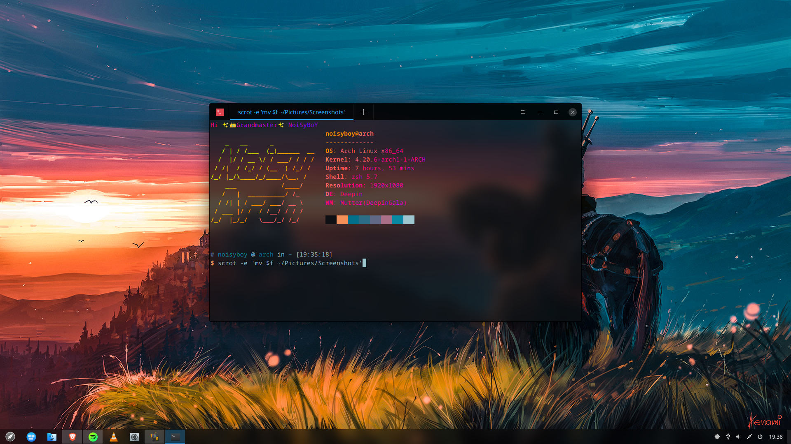
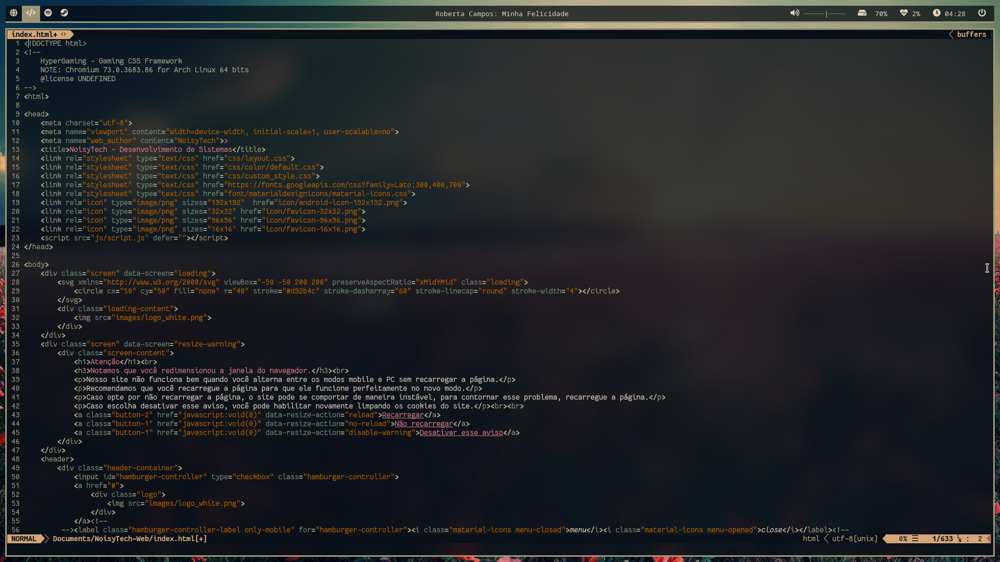
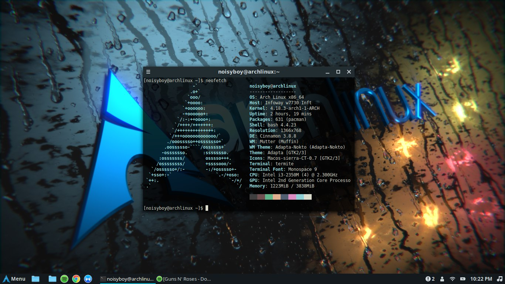
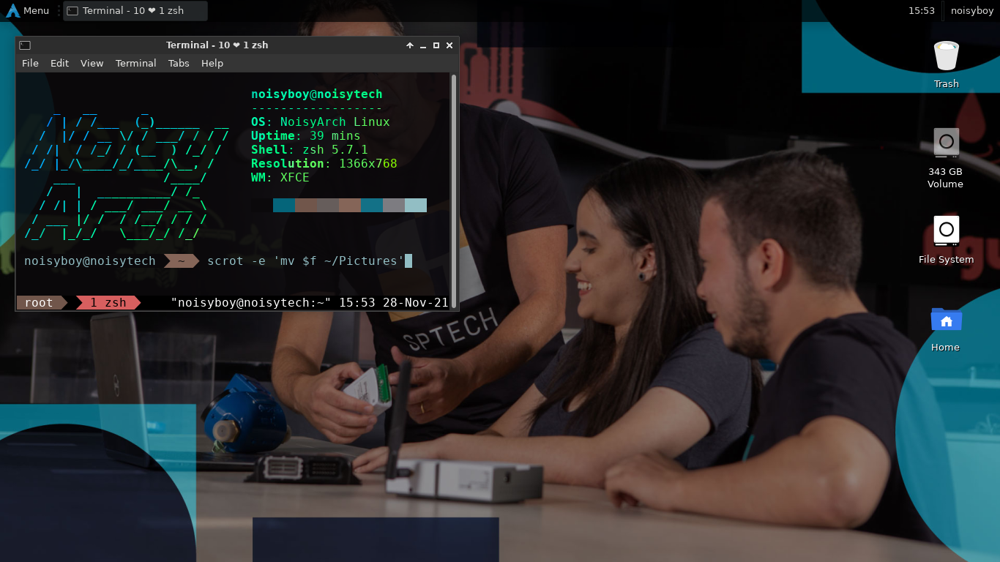

Bem-vindo ao NoisyArch!
Configure seu Linux como você quiser!
Esta comunidade destina-se a ajudar você a instalar e configurar a distribuição Arch Linux em seu Computador.
tudo isto trabalhando a partir da linha de comando, mas isso não exige que você seja um especialista.
Aprendemos muito fazendo e se você quiser saber mais sobre como o Linux opera,
o Arch Linux é uma excelente opção por muitas razões.
Quantidade de pessoas por interface
Deepin Desktop Environment - 0 Utilizam

i3-gaps - 0 Utilizam

Cinnamon - 0 Utilizam

XFCE - 0 Utilizam
